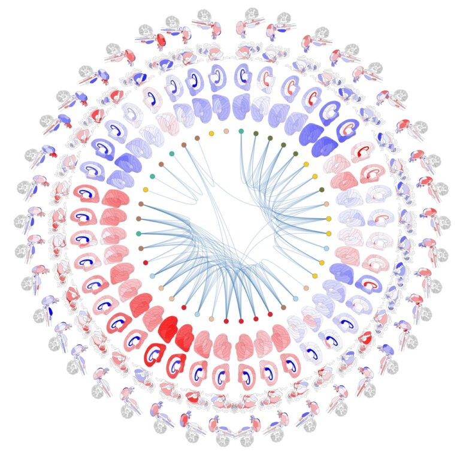

We are an interdisciplinary research group at the Cerebral Imaging Centre of the Douglas Research Institute at McGill University. Our team investigates the brain alterations that occur during the lifespan in health and disease. The primary goal of our research is to further our understanding of healthy brain aging and the underlying mechanisms that cause deviation from this trajectory in neurodegenerative disorders. We use multimodal neuroimaging and transcriptomic data as well as computational modeling, machine learning and multivariate statistical analysis to understand normative aging, Parkinson's disease, and Alzheimer's disease. Our research has three main components:
- Creating a comprehensive multi-scale model of structural and functional brain alterations across the lifespan using multimodal brain MRIs
- Investigating the link between observed MRI changes in post-mortem samples and the underlying cellular alterations, with translational applications for in vivo datasets
- Identifying the genetic and environmental risk factors that cause deviation from the normative brain-behaviour trajectories, to develop diagnostic and prognostic models.
Our work is supported by funding from the Healthy Brains For Healthy Lives (HBHL), the Natural Sciences and Engineering Council of Canada (NSERC), the Fonds de Recherché du Quebec-Santé (FRQS), and Réseau de recherche en santé CardioMétabolique, Diabète et Obésité (CMDO)
